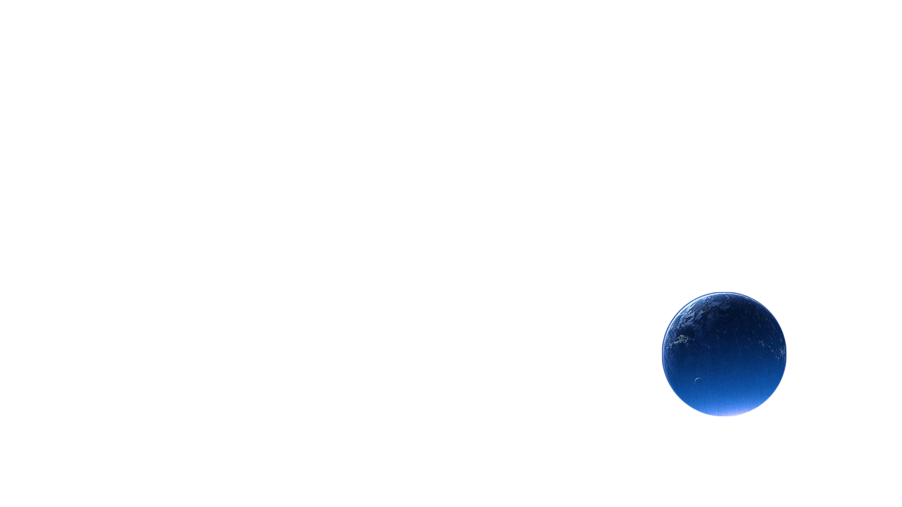
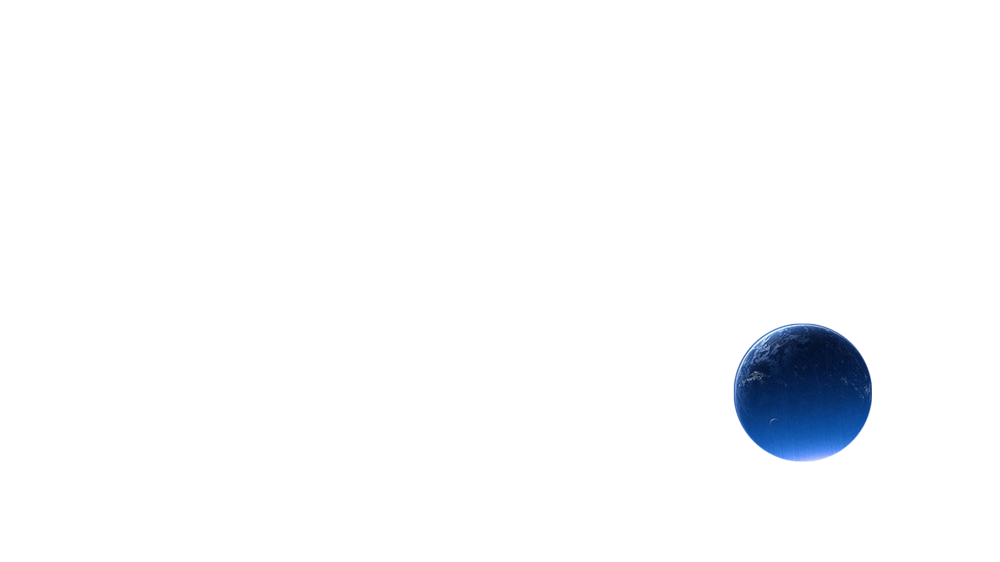

Kevin Wang
interested in web & android developing
what do I work on right now
WEB DEVELOPEMENT
Web dev is a funny process , you will experience how the origin idea become some unique web peges step by step
ANDROID DEVELOPEMENT
Android dev is now very hot because of the increasing using of smart phone and intelligent device
school assignments
As I am just a undergraduate student at communication engineering , there are amount of schoolwork and basic skills for me to learn during university